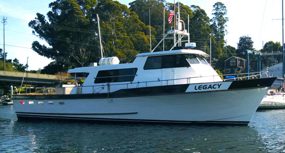

Any Dollar amount!
For any Stagnaro Trip
Call (831) 427-0230
Gift certificate doesn't guarantee a spot on a specific trip. Reservations required

Most likely your skipper will be Ken Stagnaro. A Santa Cruz native, Ken was skipper of a U.S. Coast Guard search and rescue vessel in the San Francisco bay area in the early 1980’s. Later, Ken returned home to Santa Cruz to run the family boats. Ken has been running whale and sea life excursions, scenic cruises and private charters for over 20 years. His knowledge of the Monterey Bay is matched by few. Ken also has performed our trips narrative for many years; his insights are both fascinating and educational.
Your friendly crew people are all experienced hands. Most are native to the Monterey Bay area, and have first hand working knowledge of our local marine environment. They are dedicated to making your trip fun and memorable.
Book your trip today! Book online now or call (831) 427-0230

Stagnaro Charter Boats proudly presents the charter boat Velocity. Built by Yank Marine, Inc., in Tuckahoe, New Jersey, she was completed in California in 2005 and complies with all the latest safety standards. Velocity is 60′ long and is certified by the U.S. Coast Guard to carry 66 passengers. She features a galley that sells snack items as well as your favorite beverages.

Stagnaro Charter Boats is pleased to introduce a new addition to our fleet, joining Velocity at Dock F this season. Our new boat Legacy is a 56′ fiberglass Westport yacht, featuring a spacious deck and deluxe interiors plus comfortable galley, snack bar/beer/wine and restroom amenities. Legacy can accommodate passengers for public or private fishing excursions. With this gorgeous new addition to our fleet, we are excited to offer more opportunities for our neighbors and visitors alike to go fishing, or for a relaxing cruise on Monterey Bay.
SEE THE BAY THE VELOCITY & LEGACY WAY!
** Velocity and Legacy are licensed beer and wine vessels. No outside alcohol may be brought on board. Coolers longer than 20 inches in length are not allowed.
***Velocity and Legacy are our main touring yachts, however Stagnaro Charter Boats reserves the right to substitute boats without notice.

Any Dollar amount!
For any Stagnaro Trip
Call (831) 427-0230
Gift certificate doesn't guarantee a spot on a specific trip. Reservations required